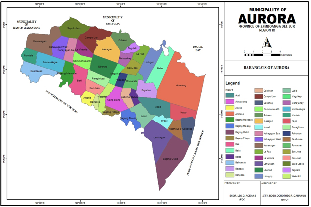

Geographical Location
The Municipality of Aurora is situated in a plateau of 1,000 feet above sea level between longitudes 123 degrees, 30’ and 123 degrees 40’ east and latitudes 7 degrees 55’ and 8 degrees North. It is bounded on the North by the Dipolog River separating it from the Municipality of Kapatagan; on the southeast by the Municipality of Karomatan; and in the west by the Municipality of Ramon Magsaysay.
ACCESSIBILITY
The Municipality of Aurora is strategically located, that it could be accessed from various points. The town propoer (Poblacion is situated at the junction of the highways leading to Ozamis City 75 kilometers to the North, Iligan City 105 kilometers to the east, Pagadian City 40 kilometers to the South, and a provincial road leading to Midsalip 36 kilometers to the west. It could also be access from the Panguil Bay, as the municipality embraces part of the isthmus separating Panguil Bay and Ilana Bay joining the Zamboanga Peninsula and the Mindanao mainland.
LAND AREA
The total land area of the Municipality of Aurora is 18,095 hectares, which is 2.46% of Zamboanga del Sur Province’s land area of 735,769 hectares. The total land are declared for tax purpose is 15,198.913 hectares, which is 84% of the total Municipal lan area of 18,095 hectares.
CLIMATE
At the elevation of 1,000 feet, above sea level, Aurora is generally cool. It has relative to the Province’s high mean annual rainfall that varies from 1,599 mm in drier areas to 3,500 in the wettest areas. Temperature ranges from 22 degree celsius to a maximum 9day) temperature of 35 degree Celsius.
SLOPE
Aurora is predominantly (54.70% of the total land area) having a terrain that is strongly sloping to moderately steep, which is mostly located in the southern and eastern part of the municipality. The central part where the Poblacion is located is generally gently sloping to undulating terrain. The northern part, which is the lowlands comprising the alluvial coastal plains are level to nearly level areas.